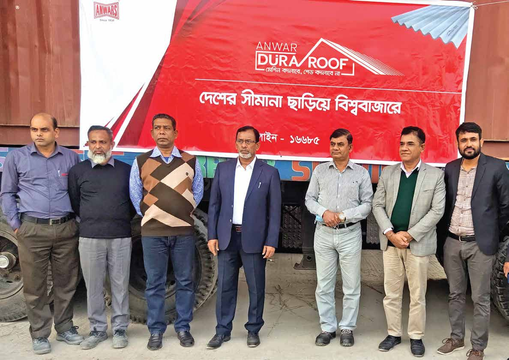

DuraRoof is being exported to India and Pakistan
Anwar Group has achieved a significant milestone by exporting DuraRoof to India and Pakistan. Despite the longstanding preference for local cement sheets in India, DuraRoof has gained prominence due to its exceptional global standards and is widely adopted in diverse Indian industrial facilities.